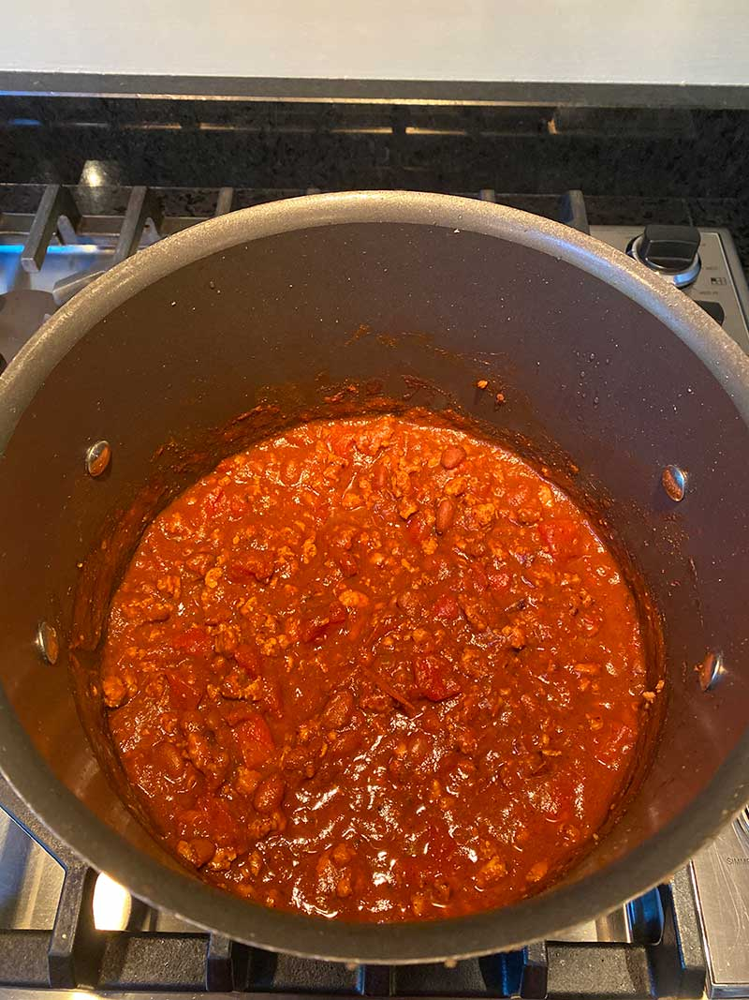

Let me tell you, you have never had better chili than my boyfriend’s mom’s chili, and I’m doing God’s
work by sharing this recipe with you all. Introducing you to The Ultimate Chili:

Ingredients
1 tablespoon olive oil
1 medium Vidalia onion, diced
1lb. 93% lean ground turkey
2.5 tablespoons chili powder
2 tablespoons ground cumin
2 tablespoons granulated brown sugar
2 tablespoons tomato paste
2-3 cloves crushed garlic
1.5 teaspoons salt
1/2 teaspoon ground black pepper
1/2 teaspoon ground cayenne pepper
1.5 cups chicken broth
1 can petite diced tomatoes
1 16oz can pinto beans
1 8 oz can tomato sauce
Instructions:
Add the olive oil to a large soup pot and place it over medium-high heat for 2 minutes.
Add the diced onion. Cook for 5 minutes, stirring occasionally.
Add the crushed garlic and stir for a couple of minutes.
Add the ground turkey to the pot and break it apart with a wooden spoon. Cook for 6-7 minutes
until the turkey is browned, stirring occasionally.
Add the chili powder, cumin, brown sugar, tomato paste, salt, pepper, and cayenne. Stir until
well combined.
Add the broth, diced tomatoes with their juice, pinto beans, and tomato sauce. Stir well.
Bring the liquid to a low boil. Then, reduce the heat to low-med low, and gently simmer
uncovered for 20 – 25 minutes stirring occasionally.
Let the chili rest for about 10 minutes before serving
This dish is perfect for the transition to the fall and winter seasons, especially in Syracuse. I like to serve
mine with a little bit of shredded lite Mexican blend cheese, a dollop of plain nonfat Greek yogurt (again,
as a healthy substitute to sour cream!) on top, and a handful of tortilla chips for scooping! Enjoy!